图 25.1 群落中包含不同种群的相互作用 这种颈环双锯鱼是少数能与海葵的有刺触手共存的鱼类之一，这是一个共生关系的典型例子。
所有生活在同一地方的生物构成群落，例如栖息在热带雨林中的大量物种便组成了一个群落。事实上，地球上每个生境都分布着特定的生物体。在漫长的进化过程中，各个物种都经历了复杂的变化以适应群落生活（图 25.1），它们协同进化并形成特定的相互关系，赋予群落以稳定性和其他特征。在这个过程中，竞争和合作都起着关键的作用。本章我们将探讨影响群落生态的各种因素。
生态系统中的每一个生物体都面临着不同形式的生存挑战。生物体利用环境资源的所有方式统称为该生物体占有的生态位 (niche)。一个物种的生态位包括它利用空间的方式、食物的范围、温度和湿度的要求以及交配条件等因素。生态位并不等同于栖息地，后者指的是生物体的生活范围，而前者指的是生物体的生存方式。
在大多数情况下，由于其他物种的存在，某一物种并不能完全占有其生态位。一个物种可以与其他物种发生多种形式的相互作用，这些作用可能对该物种产生正的或者负的效应。种间竞争是一种常见的种间关系，如果两个物种都需要利用同一种资源而这种资源又是有限的，它们之间将发生种间竞争。两种物种为争夺资源发生的直接冲突称为干扰竞争 (interference competition)；两物种消耗共有的资源称为利用竞争 (exploitative competition)。
一个物种能够利用的全部生态位称为基本生态位 (fundamental niche)，它是由物种的生理因素和资源需求决定的。物种实际占有的生态位称为实际生态位 (realized niche)，由于种间相互作用的存在，一个物种的实际生态位往往要比它的基本生态位小。
加州大学圣巴巴拉分校的 J. H. Connell 研究了苏格兰海岸岩石上两种共同生活的藤壶之间的竞争。在这两种藤壶中，星光小藤壶 (Chthamalus stellatus) 生活在浅水，退潮时经常暴露在空气中；寒伤藤壶 (Semibalanus balanoides) 的栖息地更深一些，很少暴露在空气中（图 25.2）。在深水区，寒伤藤壶在竞争中占据优势，它能够将星光小藤壶挤出岩石；甚至在星光小藤壶的生长已经具有一定规模时，寒伤藤壶也可以完全取代它，这就是典型的冲突性竞争。然而，当将寒伤藤壶人为地移开时，星光小藤壶也能够很快的占领深水区域，这说明星光小藤壶不在深水区生长并不是由于生理原因。与此相反的是，寒伤藤壶不能够在浅水区生长，这说明寒伤藤壶不像星光小藤壶一样在浅水区生活具有适应性。可以看到，星光小藤壶的基本生态位包括浅水区和深水区，但它的实际生态位却只有浅水区，因为它在它基本生态位的一部分——深水区受到寒伤藤壶竞争的排挤；而寒伤藤壶的基本生态位和实际生态位是一样的，都是深水区。
除种间竞争外，其他生态过程也可能限制一个物种的实际生态位。圣约翰草是一种广泛分布于加利福尼亚各个牧场的外来植物，为了控制该物种蔓延，当地引入了一种专门以它为食的甲虫。随后，圣约翰草的数量迅速减少，现在只存在于甲虫不能生长的阴湿地带。在这个例子中，草食性昆虫的存在限制了植物的实际生态位。
在另一情况下，某一物种的减少也可能导致其他物种实际生态位的降低。例如，许多北美的植物依赖美洲蜜蜂进行传粉。目前由于种原因，美洲蜜蜂的种群数量减少。保护生物学家们担心，一旦某些地区的美洲蜜蜂消失，依赖于它们传粉的植物种群将会受到影响甚至完全消失。在这个例子中，某个物种的缺乏（而不是存在）导致了其他物种实际生态位的缩小。
1934 ~ 1935 年间，俄国生态学家高斯 (G. F. Gause) 进行了一个经典的实验，研究了 3 种草履虫 (Paramecium) 的竞争行为。这 3 种草履虫分别是双小核草履虫 (P. aurelia)、尾草履虫 (P. caudatum) 和绿草履虫 (P. bursaria)，它们单独在试管中培养时生长得都很好，以细菌和酵母（生长在悬浮于培养液中的麦片上）为食。然而当高斯把双小核草履虫和尾草履虫放在同一只试管中培养时，尾草履虫总是灭绝，只有双小核草履虫得以存活（图 25.3）。这是为什么呢？高斯发现，与它的竞争者尾草履虫相比，双小核草履虫的生长速率要快 6 倍，这是因为它能更好地利用有限的资源，这是一个利用性竞争 (exploitative competition) 的典型例子。
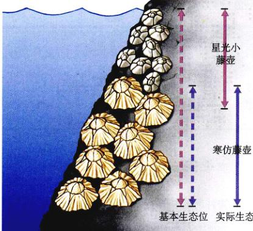图 25.2 两种藤壶对有限生态位的竞争 星光小藤壶 (Chthamalus) 在深水区、浅水区（它的基本生态位）都能生存，但是寒伤藤壶 (Semibalanus) 把它从与自己重合的生态位中排挤了出去。
图 25.3 三种草履虫的竞争排斥 (a) 高斯发现，尾草履虫单独培养时生活得很好；(b) 然而，当双小核草履虫 (P. aurelia) 与尾草履虫 (P. caudatum) 放在同一只试管中培养时，尾草履虫总是灭绝，只有双小核草履虫能够存活。这是因为它们占有相同的实际生态位，而双小核草履虫有着更强的获取食物的能力，在与尾草履虫的竞争中取得了优势；(c) 绿草履虫 (P. bursaria) 和大草履虫的实际生态位重叠不大，因此两种物种能够共同存活。
从这一类竞争实验中，高斯总结出了著名的竞争排斥原理 (principle of competitive exclusion)。此原理指出，如果两个物种为争夺同一种有限资源发生竞争，利用资源更为有效的物种最终会淘汰另一物种。换言之，当资源有限时，具有相同生态位的两个物种不可能长期共存。
在另一个实验中，高斯用另一种绿草履虫 (P. bursaria) 挑战先前获胜的尾草履虫 (P. caudatum)。高斯预计这两种草履虫也会因为竞争有限的食物资源导致一种存活而另一种消失。但是实验情况并非如此，两种草履虫都得以存活，它们采取了一种分享食物资源的方案。它们是如何做到共存的呢？原来，试管上部氧气浓度和细菌密度都较高，尾草履虫因为能够更好地捕食细菌而集中生活在这里；而试管下部氧气浓度低，更适合酵母菌的生长，绿草履虫倾向于以酵母菌为食的绿草履虫生活在试管下部。这两种草履虫的基本生态位都是整只试管，但每种的实际生态位却只是试管的一部分。因为两种草履虫的实际生态位重叠不大，因此它们都能得以存活。然而，竞争还是对每种草履虫都产生了负效应（图 25.3c）。在没有竞争者的情况下，两种草履虫的生长密度都能达到存在竞争者时的 3 倍。
高斯的竞争排斥原理也可以表述为“当资源有限时，没有两个物种能够永远占据相同的生态位。”当然，竞争同种资源的物种确实有可能共存；但是，按照高斯的理论，如果两个物种长期共存，那么或者因为存在充足的资源，或者因为它们的生态位有所不同；否则，两种必然通过竞争淘汰另外一个，这个过程就称为竞争排斥 (competitive exclusion)。
从高斯原理可以得到一个非常重要的推论：在自然群落中，两个物种的长期持续竞争几乎不存在，或者一个物种淘汰另外一个物种，或者通过自然选择缓和它们的竞争。当普林斯顿的生态学家罗伯特·麦克阿瑟研究 5 种以昆虫为食的小型森林鸣禽时，他发现这些鸣禽看似在竞争相同的资源，然而经过更加细致的观察，它们实际上是在云杉的不同部位捕食昆虫：第一种鸣禽捕食枝头末端的昆虫，第二种捕食树冠外层的昆虫，第三种在下部的树枝捕食，第四种在树的高处捕食，而第五种生活在云杉的最顶端。这样，进化使得每种鸣禽利用云杉不同部位的资源，它们对生态位进行了分割，分享可用资源，避免了相互间的直接竞争。
资源分配 (resource partitioning) 的现象经常出现在同一地理区域内的相似物种之间。这样的同域种 (sympatric species) 通常生活在栖息地的不同位置，或者利用不同的食物或其他资源以避免直接竞争（图 25.4）。这种资源分配的模式是自然选择的结果，自然选择使最初相似的物种在资源利用上发生分化，从而降低竞争压力。
进化作用的证据来自于分布区部分重叠的不同物种之间的比较。两个不同的同域物种在形态学 (morphology)（生物的形态和结构）和资源利用上的差异，比异域 (allopatric) 生活的两个物种之间的差异要显著得多。同域种之间的差异称为特征取代 (character displacement)，这是自然选择机制的结果，有利于生境分割，以缓和竞争。如图 25.5 所示的两种达尔文雀，如果它们生活在适宜的地域（分别生活在两个岛屿上，每个岛屿上都只有另外一个物种），它们喙的大小相似；而同样是这两达尔文雀，当生活在同一个岛屿上，它们中的一种喙较大，适宜啄食大的种子，另一同喙则较小，适宜啄食小的种子。
同域种分配可用资源，降低相互的竞争。
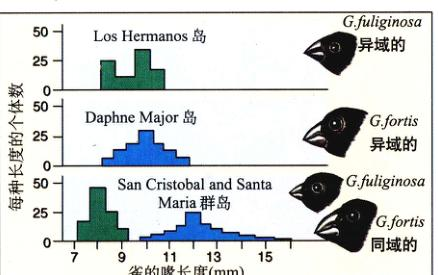图 25.5 达尔文雀的特征取代 当这两种雀 (Geospiza) 分别居住在两个岛屿上时，它们的喙大小相仿；而生活在同一个岛屿上时，它们的喙有着显著的差别。
判断两个物种是否处于竞争状态并不容易。两个物种利用共同的资源并不能说明它们正处于竞争中，除非这种资源的供应是有限的。如果两个物种的种群呈现此消彼长的关系，即一个物种的地区另一物种就少（反之亦然），它们可能根本就没有为同一种资源进行竞争。取代之的是，它们可能对某一个环境因素做出了不同的响应——也许一个物种在温暖的条件下生长旺盛，而另一种更喜欢寒冷的环境。
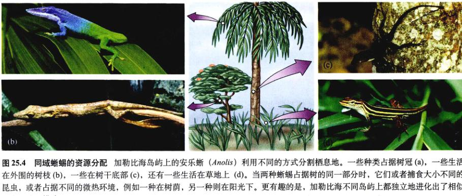图 25.4 同域蜥蜴的资源分配 加勒比海岛屿上的安乐蜥 (Anolis) 利用不同的方式分割栖息地。一些种类占据树冠 (a)，一些生活在外围的树枝 (b)，一些在树干底部 (c)，还有一些生活在草地上 (d)。当两种蜥蜴占据树的同一部分时，它们或者捕食大小不同的昆虫，或者占据不同的微热环境，例如一种在树荫，另一种则在阳光下。更有趣的是，加勒比海不同岛屿上都独立地进化出了相似的资源分配模式。
存在种间竞争的最佳证据来自于实验领域的研究。通过设计一系列实验（使两个物种单独或者共同存在），科学家们能够回答某一物种的存在是否对另一物种产生负效应。北美西南部的 Chihuahuan 沙漠生活着多种以植物种子为食的啮齿类动物。1988年，科学家们设计了一系列 50m × 50m 的区域以研究更格卢鼠 (kangaroo rat)（一种有袋啮齿类）对其他小型食种子啮齿类动物的影响。将更格卢鼠从一半这样的区域中移走，另一半则保持原样。每个区域的围墙上有都能使啮齿动物自由通过的孔洞，但是，移走更格卢鼠的那一半区域的围墙孔洞较小，更格卢鼠不能通过。在接下来的三年中，科学家们监测了不同区域内的小型食种子啮齿动物，发现在移走更格卢鼠的区域中数目更多。如图 25.6 所示，没有更格卢鼠时，小型食种子啮齿动物的数量明显增多，这说明更格卢鼠与别的啮齿类动物发生竞争，限制了它们的种群大小。
很多类似实验都说明了种间竞争在动植物中的广泛存在。竞争的效应不仅反映在种群的大小上，而且反映在种群特征的方面方面，如动物行为，个体生长速度等。例如，圣马登岛上有两种安乐蜥 (Anolis)，当其中一种 A. gingivinus 单独置于 12m × 12m 的闭合区域中时，个体生长的速度比将它与 A. pogus 放在一起时要快，而且栖息位置也更低。
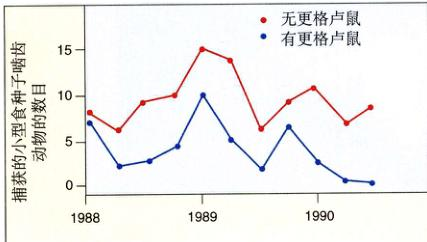图 25.6 种间竞争的测试 这个实验研究更格卢鼠对其他小型食种子啮齿类动物种群的影响。移走更格卢鼠的区域中，小型食种子啮齿动物的数目明显多于存在更格卢鼠的区域。值得注意的是，种群大小（由捕获数目估计）的变化趋势在两种条件下是同步的（同增或者同减），这也反映了气候的变化。
虽然实验是研究共存物种间相互作用的有效方法，但这一方法也有局限性。
首先，解释实验结果的工作必须十分小心。一个物种对另一种的负效应并不一定能够说明竞争的存在。例如，大小相似的不同种鱼存在相互之间的负效应，但这不是由于竞争引起的，而是因为每种鱼都以其他种的幼鱼为食。另外，一个物种可能会吸引捕食者，而捕食者也可能同时以另一物种为食，这时第二个物种的种群大小会因为第一个物种的存在（它们引来了捕食者）而减小，虽然它们之间根本就不存在竞争。所以，在分析一个物种对另一种产生负效应的实验结果时，一定要综合考虑各种可能的生态机制，而不能草率地做出物种间存在竞争的结论。
此外，不是所有实验研究都是切合可行的。例如，近年来美国的山狗种群明显增加，同时伴随着灰狼种群的减少，这能说明这两个物种之间发生了竞争吗？由于目标动物的体积较大而且分布广泛，进行人工的圈地实验，如在圈地中加入一种或两种动物，然后重复几次实验以做统计处理，显得不切实际。类似地，对于生长缓慢的树木，检测成材的竞争需要几百年，这当然也是不可能的。在这些时候，我们需要尽可能详细地研究各个物种的生态需求，以求从中了解种间作用。
捕食 (predation) 是一种生物以另一种生物为食的现象。从这个意义上来说，捕食既包括猎豹捕食羚羊，也包括鹿吃掉地上的嫩草。在简单的实验室条件下进行种群试验时，捕食者往往会将被捕食者吃光，然后自己也因食物枯竭而灭绝（图 25.7）。然而，如果为被捕食者提供一定的保护使其中群只是减少而不致灭绝，那么，随着被捕食者数量的减少，捕食者也将减少，这时被捕食者就有机会恢复种群的大小。
自然界中，捕食者对被捕食者的种群有着很大影响，最明显的例子发生在人类引入或削减某一地区内的捕食者时。例如，当美国东部的大型食肉动物被驱逐殆尽后，白尾鹿的种群爆炸性增长，破坏了几乎所有的草场栖息地。又如，当美国西海岸的水獭遭到灭绝性的猎杀时，海胆种群迅速增长。
图 25.7 简单实验条件下的捕食-被捕食关系 当捕食者栉毛虫 (Didinium) 被加到草履虫种群中后，开始时栉毛虫的数目增加，同时草履虫数目持续下降。当草履虫完全消失后，栉毛虫也逐渐灭绝。
与此同时，人们将猫、狗、老鼠等动物引入世界上很多岛屿，这对当地的动物区系造成了毁灭性的打击。许多岛屿上的土加拉帕戈斯海龟濒临灭绝，罪魁祸首就是人类带到岛上的猪、狗和老鼠，它们吃掉了许多龟卵和幼龟。类似地，由于老鼠的捕食，新西兰的许多珍稀鸟类和爬行动物都已濒临绝迹，现在只在一些离岸较远的老鼠尚未到达的岛屿上生存。一个令人心痛的事实是，新西兰附近斯蒂芬岛上特有的史蒂芬鹪鹩已经灭绝，而造成这一切的竟然是被灯塔看管人带到岛上的一只猫！
另一个说明被捕食关系在群落中起到重要作用的例子，与仙人掌有关。19世纪，一种仙人掌引入澳大利亚，由于缺少天敌而迅速繁殖，到 1925 年已经侵占了 1200 万公顷的牧场，形成致密而具刺的群落，使牧牧无法正常进行。为了控制这些仙人掌，1926年开始从它们的原产地阿根廷引进了一种捕食者——仙人掌螟 (Cactoblastis cactorum)。直到 1940 年，该引入掌得到了有效的控制，目前仍是一个很小的种群。
捕食关系给被捕食者提供了很大的选择压力。任何能够降低被捕食概率的自然选择的性状都会被保留下来。在下面的几节中，我们将讨论若干植物和动物的防御机制。相应地，自然选择也会在捕食者中保留那些对抗被捕食者防御性状的适应。这样，一种协同进化的竞赛模式就在捕食者与被捕食者之间展开了——更好的防御方法和更好的捕猎手段协同进化。
软体动物和它们的捕食者的化石记录揭示了这种协同进化。在中生代（大约 6500 万年到 2.25 亿年前）出现了新的以软体动物为食的鱼类和甲壳类动物，它们能够咬碎或撕裂贝壳。与此同时，软体动物也进化出各种防御措施，包括更厚的贝壳、尖刺或者不易被捕食者抓住的光滑的贝壳等。这样，这些被捕食者的适应也为捕食者提供了选择压力，使它们进化出更加有效的捕食技巧。
植物对食草动物的防御机制多种多样，其中最常见的是形态防御 (morphological defense)：各式各样的刺使食草者望而却步；毛——特别是那些具有黏性末端的腺毛，使食草性的昆虫不敢靠近。某些草的叶片中含有二氧化硅，既有强化作用又起保护功能；如果细胞中存在大量的硅，这些植物的口感一定不佳。
与形态防御相比，化学防御更为广泛和重要。植物通过所谓“第二类化学物质” (secondary chemical compound) 对食草性动物进行防御，它们与第一类化学物质不同，后者参与主要的代谢过程，例如呼吸和光合作用等。很多植物，包括藻类拥有结构多样的第二类化学物质，它们可以直接毒杀食草动物或者干扰它们的新陈代谢，例如抑制昆虫幼虫的正常发育等。大部分食草动物都要避开产生类似物质的植物。
十字花科 (Brassicaceae) 植物能够产生一类特征性的化学物质——芥菜油。这类物质使诸如芥菜、白菜、甘蓝、萝卜和辣根等植物具有刺激性的气味和味道，这些我们喜欢的味道对很多昆虫来说都是有毒的。萝摩科 (Asclepiadaceae) 和夹竹桃科 (Apocynaceae) 的植物能够分泌一种乳状液体以抵御食草动物。这些植物通常含有强心苷 (cardiac glycoside)，对脊椎动物的心脏功能具有强烈影响。
图 25.8 食草昆虫对食物的适应 (a) 一只隐藏在白菜叶上的菜粉蝶 (Pieris rapae) 幼虫。虽然十字花科植物能够产生一种特征性化学物质——芥菜油以抵御大部分的食草昆虫，菜粉蝶却能够分解这种化学物质。(b) 一只成年菜粉蝶。
图 25.9 蓝松鸦学到黑脉金斑蝶不好吃 (a) 这只笼养蓝松鸦第一次捕食黑脉金斑蝶；(b) 几分钟之后，蓝松鸦吐出了黑脉金斑蝶。该蓝松鸦以后很可能不再捕食这种具有黄黑斑纹的昆虫。
某些食草动物以某些科的植物为食，虽然这些植物能够释放第二类化学物质，但是那些食草动物不会受到它们的伤害，甚至只以这些植物为食。例如菜粉蝶（粉蝶亚科）的幼虫几乎只以十字花科和芸香科的植物为食；它们也吃其他含有芥菜油的植物。黑脉金斑蝶（斑蝶亚科）的幼虫专门以萝摩科和夹竹桃科的植物为食。这些动物是如何逃避了植物的防御机制呢？这些特异性的进化先驱和生态结果又是什么呢？
让我们来对这种特殊关系的进化提出一个可能的解释。当十字花科和芸香科植物进化出产生芥菜油的能力后，几乎全部的食草昆虫都以其他植物为食，而在一段时间内不取食它们。但是某个时刻，有些昆虫（例如菜粉蝶）进化出了分解芥菜油的能力，于是就可以食用这些植物而不受伤害。有了这种能力，菜粉蝶就开辟了新的食物资源，而不需要继续和其他食草昆虫竞争食物。通常，菜粉蝶这样的昆虫进化出发达的感觉器官，它们能够感知植物产生的第二类化学物质从而找到它们。很明显，菜粉蝶与十字花科和芸香科植物之间的这种关系是一种典型的协同进化 (coevolution)。
以富含第二类化学物质的植物为食的动物具有某些特别的优势。萝摩科植物含有强心苷，它们能够保护植物体不被食草动物吃掉；黑脉金斑蝶的幼虫以萝摩科的植物为食，但是它们并不分解这些强心苷，而是将它们浓缩储存在脂肪体 (fat body) 中。这些强心苷能够保存到蛹和成虫中，甚至通过产卵传递到下一代，它们能够保护黑脉金斑蝶在生活的各个阶段中免受捕食。如图 25.9 所示，一只从未见过黑脉金斑蝶的鸟捕食了一只这类具有醒目的黄-黑斑纹的蝴蝶保持警惕，以免再次误食。然而有些鸟类能够忍耐这些保护物质，它们可以捕食黑脉金斑蝶。
许多以萝摩科植物为食的昆虫具有鲜艳的颜色，借此标明自己的有毒身份，这种生态策略叫做警戒色 (warning coloration, 或者 aposematic coloration)。分泌毒素或者具有针刺的动物常常拥有艳丽的外表，而缺乏这类防御机制的动物则极少拥有醒目的颜色。事实上，很多物种利用保护色 (cryptic coloration)——与生活环境类似的颜色——躲避敌害（图 25.10）。善于伪装的动物一般不群居，因为捕食者一旦发现一个个体，将会很容易识别出其他的个体。
图 25.10 保护色 一只尺蠖 (Necophora quernaria) 正在模拟一段小树枝。
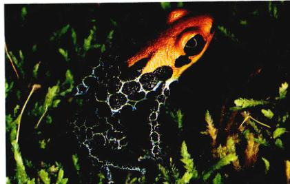图 25.11 脊椎动物的化学防御 拉丁美洲的森林中存在大量对脊椎动物有剧毒的丛蛙，它们通常具有鲜明的警戒色，借以标明自身的毒性。
动物也制造各种各样的化学物质以进行防御，这之中的许多物质都令人瞠目结舌。蜜蜂、黄蜂等许多昆虫，以及蝎子和蜘蛛等许多节肢动物都利用化学物质进行防御和捕杀猎物。除此之外，许多海洋生物和脊椎动物也进化出化学防御的机制，例如毒蛇、蜥蜴、鱼类和某些鸟类。丛蛙科 (Dendrobatidae) 某些种类的皮肤色泽鲜艳，它们的表面覆盖了一层含有有毒生物碱的黏液（图 25.11）；这些生物碱的毒性相当惊人，血液注射几毫克就足以致人于死地。从丛蛙身上已经分离出了 200 余种生物碱，其中有些生物碱在神经-肌肉的研究工作中起到了重要的作用。目前，人们正在对海洋动物、藻类和高等植物中的许多化学物质进行研究，以期寻找治疗癌症和其他疾病的新型药物。
在进化过程中，许多物种学会了模仿其他生物，而后后者常常受捕食者的青睐，并且具有警戒色，这种生态现象称为拟态 (mimicry)。拟态有两种类型：贝茨拟态和米氏拟态。
贝茨拟态 (Batesian mimicry) 得名于 1857 年发现这种拟态的英国自然科学家亨利·贝茨 (Henry Bates)。他在对南美亚马逊河流域的考察中发现，许多对于捕食者来说美味可口的昆虫也具有色彩鲜艳的外表，而这种外表与其他一些难吃的昆虫的外表极其相似。贝茨认为，这是一种欺骗捕食者的手段，捕食者会将它们误认为是味道难吃的种类。
最显著的贝茨拟态发生在蝴蝶与蛾类身上。很显然，这类系统里的捕食者一定借助视觉捕食，否则相似的外观并不能起到迷惑捕食者的作用。目前，越来越多的证据表明，贝茨拟态也会发生在非视觉系统（例如嗅觉），虽然这案例于我们人类是不容易察觉的。
贝茨拟态中模型蝴蝶（被模拟的物种）的幼虫往往只食用一种或几种亲缘关系紧密的植物。这些植物借助有毒的化学物质进行自我保护，但是模型蝴蝶可以抵御这些有毒分子。另一方面，拟态蝴蝶的幼虫则不存在严格的食物限制，它们能够以多种不含保护分子的植物为食。
北美副王蛱蝶 (Limenitis archippus) 是北美最美丽的蝴蝶之一，是一种拟态蝴蝶（图 25.12a）。这种蝴蝶模仿有毒的黑脉金斑蝶，它们分布广泛，分布区从加拿大中部穿过大部分美国直到墨西哥。北美副王蛱蝶的幼虫以柳树和三叶杨为食，它们的幼虫和成虫对鸟类都没有危害——虽然这一点最近有所争议。最有趣的是，北美副王蛱蝶成虫的这种贝茨拟态并不在幼虫身上体现：它们的幼虫在树叶上伪装成鸟类的排泄物，而黑脉金斑蝶的幼虫是十分醒目的。
米氏拟态 (Müllerian mimicry) 得名于 1878 年提出它的德国生物学家 Fririty Müller。在米氏拟态中，几种没有亲缘关系但都具有保护措施的动物外形彼此相似（图 25.12b）。如果这些彼此相似的动物都有毒性或者危险性，捕食者就更容易识别并避开它们；这样，米氏拟态的几种动物就同时获得了优势。捕食者会进化出识别有害猎物的天生本能，尤其是当存在多种长相相似的危险猎物时。
图 25.12 拟态 (a) 贝茨拟态。黑脉金斑蝶幼虫会食用萝摩科和夹竹桃科植物，它们含有强心苷 (cardiac glycoside)，因而鸟类等捕食者避而远之。黑脉金斑蝶具有鲜明的警戒色，北美副王蛱蝶 (Limenitis archippus) 就模仿这种色彩。(b) 米氏拟态。Heliconius erato 与 H. melpomene 是同域种，H. sapho 与 H. cydno 是同域种。这些蝴蝶的味道都很难吃，它们进化出类似的警告色以减少被捕食的几率；捕食者只需认识其中一种就会避开其他的。
图 25.13 蝙蝠传粉 很多植物的花与传粉者协同进化。不仅昆虫可以传粉，其他物种也可以，注意图中蝙蝠吻部的花粉囊。
生活在同一个群落中的植物、动物、原生动物、真菌和细菌，在几百万年的漫长岁月中不断变化、相互适应。例如，许多显花植物进化出适应动物传粉的特征；同时，这些动物也进化出许多特性，以使它们能够有效地从植物——经常是它们的花——获取食物等资源（图 25.13）。当这些动物进食时，花粉会随着它们在不同植物个体间传播；动物也会吃掉含有种子的美味果实，随后将种子带到远方落地生根。
生物群落中的各个物种之间通过长期的进化形成相互适应的性状，这种相互作用称为协同进化 (coevolution)。前面几节中讨论过的捕食者-被捕食者相互作用即是这种现象的典型代表。
另类协同进化涉及共生关系 (symbiotic relation)，它是指两种或更多的生物生活在一起所产生的相对持久的关系。所有的共生关系都包含协同进化的潜力，并且在很多情况下，这种协同进化的结果是十分奇妙的。一个典型的例子是地衣 (lichens)，它是真菌与绿藻或蓝细菌的共生体，我们在第36章会对地衣有详细的讨论。另外一个重要的例子是菌根 (mycorrhizae)，它是真菌和大部分植物根的共生体，真菌促进根对某些营养的吸收，根则为真菌提供碳水化合物。例如豆科植物的根瘤中含有固氮菌，它们能够为寄主植物提供可以利用的氮。
在热带，大量切叶蚁的存在经常使某一地区内至少四分之一的树叶消失殆尽。有趣的是，切叶蚁并不是直接吃掉树叶，而是将它们拖回地下的巢穴中，咀嚼之后“喂”给某种真菌的孢子。切叶蚁在特制的培养床上培养这些真菌，使它们生长、繁殖，真菌则成为蚂蚁和它们的幼虫的主要食物。这是一个绝好的共生例子。
共生主要包括以下类型：①偏利共生 (commensalism)：共生的双方中有一方获利，而另一方既无获利也无损害；②互利共生 (mutualism)：共生的双方均能够获利；③寄生 (parasitism)：共生的双方中一方获利而另一方受到损害，寄生也可以看做一种特殊的捕食关系，在这里被捕食者并不一定需要死亡。
偏利共生 (commensalism) 是一种对共生的一方有利而对另一方既无利也无害的共生关系。在自然界中，一个物种的个体经常附着在另一种物种的个体上。例如，附生植物 (epiphyte) 生长在另一种植物的枝上，它们通常对附主植物无害，而自身得以获利。许多海洋动物，如藤壶附着生活在其他活跃游动的海洋动物（如鲸类）身上，不时的从一个地方被运载到另一个地方。通过这样的附着生活，这些“乘客”能够得到更多的保护以防范捕食者，还能够不断地更新食物资源。另外，附主游动时产生的水流对于滤食性的附生动物十分重要，它们的后代也可以得到更广泛的传播。
偏利共生最著名的例子是热带的一些小型鱼类和海葵之间的关系（图 25.14）。海葵是一种长有带刺的触手的海洋动物；其他鱼类碰到这些触手都很快被麻痹，但是这些热带鱼进化出能够海葵触手间生活的能力，它们借助海葵的触手逃避敌害，并且以海葵遗漏的食物碎屑为食。
在陆地上，类似的偏利共生关系出现在黄鹂（或红嘴）牛惊鸟与牛或犀牛之间。这些鸟在生命中的绝大部分时间里都围绕着附主动物，拣食它们身上的寄生虫和其他昆虫。
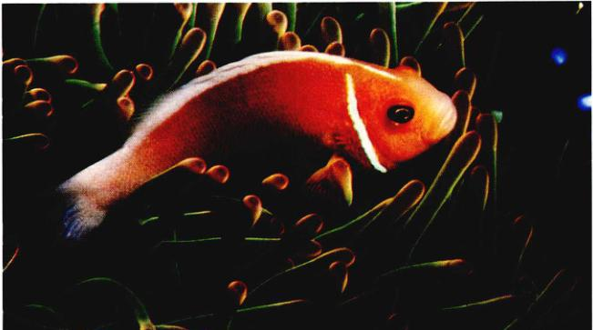图 25.14 海洋中的偏利共生 这是一条生活在关岛的颈环双锯鱼 (Amphiprion perideraion)，它与海葵形成偏利共生的关系，取食海葵的食物碎屑，并受到海葵触须的保护。不同种类的海葵释放不同的化学物质，以吸引特定的鱼类与之共生，而这些化学物质对于与其他海葵共生的鱼类往往具有毒性。这一地区共有 26 种这类鱼，它们均与海葵共生；而这些海葵约有 10 种，所以有些海葵并不只为一种鱼提供栖息地。
在每个例子中，共生的第二方是否受益都是很难确定的，偏利共生与互利共生之间并没有严格的界限，例如，鱼类清除掉海葵触手上的食物碎渣也许有利于海葵的捕食活动。同样，犀牛与犀牛鸟之间的关系也经常被视为一种互利共生的关系——犀牛利用犀牛鸟除去身上的寄生虫，而犀牛鸟获得了稳定的食物来源。
另一方面，偏利共生也很容易转变为寄生关系。黄鹂（或红嘴）牛惊鸟不仅拣食宿主身上的吸血虫，还会将它们啄伤，并饮用伤口流出的血液。如果这种攻击效应积累较长的时间，附主物种的体力可能被明显削弱，尤其是在其长期干旱的环境下。
在互利共生 (mutualism) 中，共生的双方均可获得利益。互利共生对生物群落结构的形成起着决定性的重要作用。最著名的例子是显花植物与它们的传粉动物，包括昆虫、鸟、蝙蝠等。在第37章中我们将会看到，显花植物与传粉动物的特征在进化过程中相互适应，植物为利于动物传粉而进化出很多性状，同时动物也为了更好地从植物获取食物而产生某些利于传粉的特异性。
另一个互利共生的例子是蚂蚁和蚜虫。蚜虫利用它们的刺吸式口器吸食植物皮部的汁液，它们从这些汁液中得到蔗糖和其他营养，并将它们转化成一种特殊的蜜汁从肛门排出。一些蚂蚁从中获得益处——它们“饲养”蚜虫，不断地将蚜虫搬运到新的植物上。这样，蚜虫能够不断获得新鲜的食物资源，而蚂蚁可以享用蚜虫们分泌的蜜汁。
拟切叶蚁 (Pseudomyrmex) 与产于拉美的某种金合欢属 (Acacia) 植物之间的关系是互利共生的生动例子（图 25.15）。这些植物的托叶变态为成对的、空心的刺，像所有的有刺植物一样，金合欢利用这些托叶刺来威慑食草动物，而拟切叶蚁恰恰居住在这些刺中，并且它们只以此为栖息地。
在这些金合欢小叶的叶尖部分，生有特殊的富含蛋白质的组织——Beltian 小体（最早由 19 世纪英国自然学家 Thomas Belt 发现）。这种小体在其他没有蚂蚁栖息的金合欢属植物叶上并不存在。很显然，它们充当了蚂蚁的主要食物。此外，靠近叶基的腺体还会分泌一种蜜汁，蚂蚁们就以 Beltian 小体和这些蜜汁喂养它们的幼虫。
很显然，与金合欢的这种关系对蚂蚁是有利的，它们居住在这里也很容易理解。蚂蚁和它们的幼虫在空中的刺里得到保护，并且可以获得营养丰富的食物——富含蛋白质的 Beltian 小体和富含糖类的蜜汁。
反过来，它们又能为植物做些什么呢？蚂蚁们不停地在金合欢的枝上巡逻，攻击吞食落在金合欢枝叶上的食草昆虫。蚂蚁还帮助金合欢同其他植物竞争，它们清除掉遮挡金合欢采光的其他植物的枝叶，在中美洲低地茂密的森林里为金合欢创造了一个采光通道。事实上，当人为地把蚂蚁转移后，金合欢在它的原栖息地就很难成动地与其他植物进行竞争。最后，蚂蚁在巢中蓄积了大量有机物，它们尚未消化完全的食物和它们的分泌物成为金合欢丰富氮源。
同我们在偏利共生中遇到的现象一样，事情往往不像看起来那么简单。蚂蚁-金合欢的互利共生也发生在肯尼亚。在肯尼亚，有若干种居住在金合欢上的蚂蚁，但在任何一株植物上仅能观察到一种这样的蚂蚁。举腹蚁 (Crematogaster nigriceps) 与其他蚂蚁相比处于竞争劣势，为了防止其他蚂蚁的入侵，它们剪除金合欢的部分枝条，以防止这些枝条与其他植株接触从而成为其他蚂蚁入侵的桥梁。这种行为虽然对蚂蚁有利，但是对植物却是毁天性的，因为它破坏了植物形成花的组织，大大降低了植物的繁殖力。在这种情况下，最初进化形成的互利共生系转变成了寄生关系。
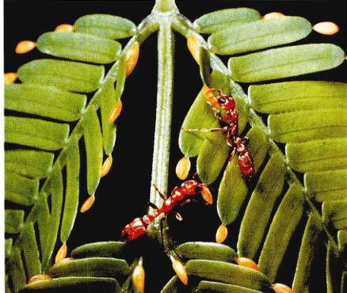图 25.15 互利共生：蚂蚁与金合欢树 在拉丁美洲，拟切叶蚁属 (Pseudomyrmex) 的蚂蚁居住在某些种类的金合欢树的中空托叶刺中，它们食用金合欢树的叶基腺体分泌的蜜汁和小叶尖上富含蛋白质的组织——Beltian 小体。同时，蚂蚁也为金合欢树清除植食性的昆虫和其他遮光的植物，并为金合欢树提供充足的有机营养。
寄生 (parasitism) 可以看做一种特殊的捕食关系；在这里，捕食者即寄生者，它比被捕食者小得多，而且通常两者的关系更为密切。寄生关系对寄主有害，但有利于寄生者。这个定义看似简单，但是我们看到，在具体例子中区分寄生与其他共生关系（如捕食等）并不那么简单。
在寄主表面取食的寄生生物叫做外寄生者 (ectoparasite)。众所周知，如生活在脊椎动物——主要是鸟类与哺乳动物——体表的虱类等就是外寄生的例子（图 25.16）。但是蚊子不属于寄生生物，虽然它们从鸟类与哺乳动物身上吸取食物的方式和虱子类似，但它们与被吸血者的关系相对简单。
拟寄生虫 (parasitoid) 是一些在活的寄主身上产卵的昆虫。这种行为在黄蜂中十分普遍，它们的幼虫以那些不幸的寄主为食，并最终杀死它们。
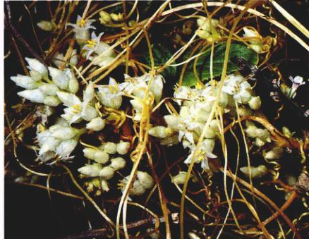图 25.16 外寄生 显花植物菟丝子 (Cuscuta) 是寄生植物，它们的叶在进化过程中失去了叶绿素。作为异养植物，菟丝子自己不能合成食物，它们从寄主植物获得营养。
脊椎动物的体内寄生着内寄生虫 (endoparasite)，这包括动物界和原生生物界的若干门的一些种类，无脊椎动物体内也生活着众多的内寄生虫。细菌和病毒虽然符合上述的定义，但它们一般不被当作寄生生物。
从寄生在人体的多种原生动物和无脊椎动物中可以看出，内寄生生物比外寄生生物具有更加极端的特异性。寄生者与寄主的关系越密切，它们的形态和行为在进化过程中的改变就越显著，这种规律在所有的共生关系中都有所体现。与外部环境相比，生物体的内部环境相对稳定得多，因此内寄生虫的结构得以简化，那些不必要的器官在进化过程中逐渐消失。
并非所有的寄生生物都直接消耗寄主的身体（例如吃掉寄主等）。有些鸟类，例如北美的燕八哥和欧洲杜鹃，它们将卵产在其他种类的鸟巢里，这种现象称为巢寄生 (brood parasitism)。寄主像抚养自己的后代一样抚养寄生者的雏鸟，并且往往喂给它们更多的食物（图 25.17）。巢寄生降低了寄主鸟类繁殖的成功率，因此自然选择使得一些寄主能够辨认寄生卵并遗弃它们。但令人惊奇的是，有些鸟类居然没有进化出这种辨识能力。
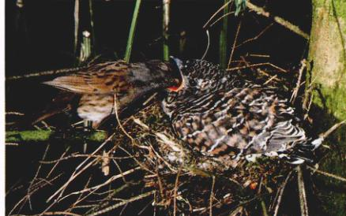图 25.17 巢寄生 这只篱雀正在抚育一只杜鹃的雏鸟。这只雏鸟比成年篱雀还大得多，但篱雀还是没认出这并不是它的后代。杜鹃的雌鸟偷偷把卵产在其他鸟类的巢中，将孵育后代的任务交给这些没有头脑的鸟。
以上我们已经看到了生物群落中各个物种之间相互作用的各种方式。在自然界中，这些作用方式往往同时存在；而且，很多情况下，一种相互作用的结果会由于同时存在另一种作用而发生改变，有时新的结果甚至可能与原来的完全相反。
当资源有限时，处于竞争优势的物种将使群落中与竞争的其他物种完全灭绝，然而，捕食者能够通过减少竞争物种的个体数目以达到避免或降低竞争排斥的作用。群落中某一捕食者通常会以两种、三种或者更多的植物或动物为食，因此它们对食物的选择在某种程度上将取决于被捕食者的相对数量。也就是说，当物种 A 的数量较多时，捕食者将以 A 为食，而当 A 的数量逐渐稀少时，它们可能会转而捕食物种 B。于是，在竞争中占优势的物种将会由于种群的扩大而成为捕食者的主要食物，其结果是限制了优势种对其他物种的完全排斥。
这种生态过程中中物种之间的相互关系是潮间带生物群落的典型特征。例如，海星选择双壳类软体动物为食，它们的存在的避免了潮间带栖息地被少数双壳类霸占，为其他许多生物提供了生存空间（图 25.18）。当海星被移走时，这些地区的物种多样性显著而迅速地下降，海滩被少数几种双壳类动物独占。因为捕食作用可以减少竞争，所以，消灭群落中的主要捕食者（如狼和美洲狮）的做法是错误的，，这样做的结果是适得其反，非但不能增加反而会降低群落的物种多样性。
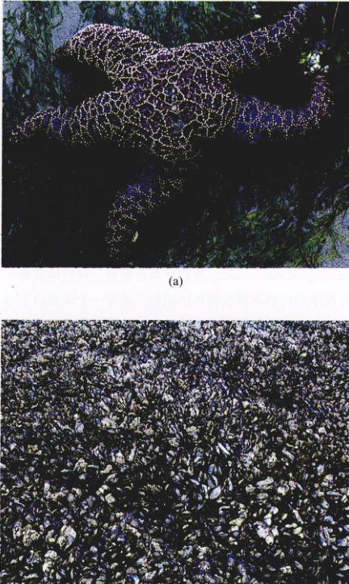图 25.18 捕食削弱了竞争 (a) 在对照实验中，实验者移去了海岸生态系统中一个关键的捕食者——海盘车 (Pisaster)。(b) 实验结果十分惊人，具有强大竞争力的贻贝疯狂生长，完全排挤了其他 7 个本地物种。
寄生虫可能对同域种产生不同的效果，从而影响这些物种间的相互作用。在一个经典的实验中，芝加哥大学的托马斯·帕克研究了一种原生动物的拟球虫 (Adelina) 与两种甲虫——Tribolium castaneum 和 T. confusum 之间的相互作用关系。当不存在寄生虫时，T. castaneum 取得优势，T. confusum 几近灭绝；而当有寄生虫存在时，结果恰恰相反，T. castaneum 灭绝。这种寄生虫效应广泛存在于许多自然群落中，例如前面提到的圣马登岛上的安乐蜥 (Anolis)，竞争中的劣势种能够抵御疟疾，而其他种均很容易感染；只有在疟虫盛行的地区这两种安乐蜥才能够共存。
有些时候，物种间的相互作用并非是直接的。一个物种的存在会通过它与第三个物种的作用而影响第二个物种，这种效应称为间接效应 (indirect effect)。例如，Chihuahuan 沙漠中的啮齿动物和蚂蚁都以植物种子为食，我们有理由猜测它们会发生竞争。然而，当所有的啮齿动物都从实验区域中移走后（啮齿动物不能再回到实验区域），蚂蚁种群首先增加，随即开始减少（图 25.19）。起初的数量增加是在我们意料之中的，因为群落中没有了竞争者。那么，如何解释接下来种群的减少呢？这个问题的答案生动地揭示了自然界中生态系统的复杂性。而在这个系统中，大粒植物与小粒植物相互处于竞争优势。啮齿动物的消失导致了大粒植物的增加，它们在与小粒植物的竞争中取得优势，使得蚂蚁喜欢食用的小粒植物数量减少，最终造成了蚂蚁种群的衰减。可以看出，啮齿动物对蚂蚁的作用十分复杂：既包括源于资源竞争的直接负效应，又包括一个通过植物竞争发生的正效应。
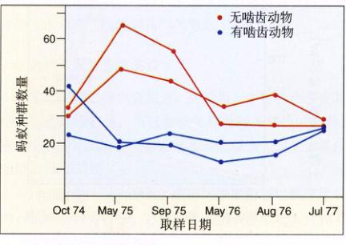图 25.19 移走全部啮齿动物后蚂蚁种群的变化 与对照组相比，无啮齿动物的实验区域中蚂蚁种群首先增加，随后减少。
图 25.20 啮齿动物与蚂蚁的相互作用 啮齿动物和蚂蚁都以种子为食，相互存在着负效应。但是，啮齿动物对于大粒植物有负效应，而产生大粒种子的植物又对产生小粒种子的植物具有负效应。因此，啮齿动物的存在使得小粒植物的种群增加，而小粒植物对蚂蚁种群又有正效应。这样，啮齿动物的存在在对蚂蚁种群产生间接的正效应。
图 25.21 关键种 河狸建造了堤坝把流动的溪水围住，为其他的动植物创造了新的生境。
对于群落组成具有特别重要的影响的物种称为关键种 (keystone species)。前面提到的海星就是关键种，它们通过捕食作用削弱物种竞争，维持着群落的物种多样性。
除此之外，还有许多其他形式的关键种。有些物种能够改变环境，为其他物种创造新的栖息地。例如，河狸建造了堤坝把流动的溪水围住，形成小型的池塘，改变了栖息地的水环境（图 25.21）。再比如，产于美洲的鳄鱼在湖底挖掘出很深的洞穴，干旱到来时，这些洞穴是惟一有水的地方，许多水生生物借此得以存活到干旱结束。如果没有这些洞穴，在湖水重新注入之前它们就将全部死去。
即使一个地区每年的气候都保持稳定，生态系统还是会趋向于由简单变为复杂，这个过程叫做生态演替 (ecological succession)。我们经常会看到一片空地或者一伐代净的树林逐渐长满新的植物，或者一个池塘由于岸边植物的不断包围而变成陆地，这些都是生态演替的结果。
如果对一片清除掉所有植被的空置地不之理，植物将慢慢地重新长满整个区域，最终在该处看不出任何清理过的痕迹。这种在原有群落遭到破坏后发生的生态演替称为次级演替 (secondary succession)。
与之相对应的是初级演替 (primary succession)，它发生在没有生命存在过的地方，例如岩石或一所开放的水域，生物能够逐渐迁入这些地区并改变它的性质。初级演替既发生于海面上新生的火山岛上，还发生于冰川退却遗留的湖中或暴露的地面上（图 25.22）。冰碛层上的初级演替是一个很好的例子（图 25.23）。首先，在裸露而缺乏营养的地表上，地衣首先生长，形成小块的土壤；它们分泌的酸性物质将岩石分解，进一步积累新的土壤。随后，苔藓植物在这些土壤上定居，产生更多的有机营养物质使得灌木丛迅速生长（桤木丛）。再过 100 年后，桤木在土壤中建立起足够的氮素水平，大乔木（云杉）得以繁盛，最终通过竞争排斥桤木，形成茂密的云杉林。
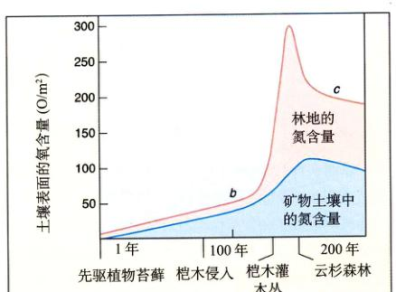图 25.22 植物的演替不断改变着土壤性质 起初，阿拉斯加冰川湾的冰碛土壤中只含有极少量的氮（景观如图 25.23a）。随着固氮桤木的不断生长，土壤中建立起足够的氮水平，促进针叶林的生长。图中字母 b 和 c 代表了图 25.23 中的相应照片。
图 25.23 阿拉斯加冰川湾的初级演替 (a) 冰川边缘以每年 8 m 的速度后退，暴露山缺乏氮和其他矿物质的贫瘠土地。最初的垦荒者是地衣和苔藓，它们与一些固氮微生物共生。经过 20 年，桤木开始繁盛。(b) 随着土壤中氮水平的迅速升高，桤木逐渐形成茂密的灌木丛。(c) 云杉对桤木进行竞争排斥，形成云杉林。
另一个生态演替的例子是寡营养的 (oligotrophic) 湖通过积累有机物逐渐变成富营养的 (eutrophic) 湖的过程。在这个过程中，湖中生物群落的组成也将发生变化，物种多样性首先增加，随后减少。
由于发生在某一地区内不同栖息地的初级演替最终会形成类似的植被，即这一地区的特征植被，美国生态学家 F.E. 克莱门茨于 19 世纪末提出了一个顶级群落 (climax community) 的概念。但是，近年来生态学家们逐渐意识到：①气候条件在持续不断地变化；②生态演替发生得十分缓慢；③各个地区的植被状况越来越受到人类活动的影响。所以，生态学家们不再用与从前同样的态度审视“顶级群落”的概念了。
生态演替之所以会发生，是因为一个物种会改变其栖息地和环境资源，而这些改变将有利于其他的物种。在这个过程中，有 3 个很重要的动态概念：耐受、易化和抑制。
(1) 耐受 (tolerance)：演替的早期阶段以快速生长的 r-选择物种为特征，它们能够耐受贫瘠土地上种种不适于生物存活的恶劣条件。
(2) 易化 (facilitation)：演替早期阶段的物种使栖息地的局部环境得以改变，有利于其他物种的生长。例如，在冰川湾 (Glacier Bay) 的生物演替过程中，苔藓将氮转化为桤木能够利用的形式，从而使得桤木迅速生长；而桤木的落叶分解后降低了土壤的 pH，使得依赖酸性土壤的云杉和铁杉逐渐繁盛起来。
(3) 抑制 (inhibition)：许多时候，一个物种对环境的改变有利于其他物种的生长，而对自身却有抑制作用。例如桤木在酸性土壤中的生长就不如云杉和铁杉那么好，致使两者最终取代了前者。
在生态演替过程中，环境越友好，物种的多样性越丰富。然而，当生态系统趋于成熟后，更多的 K-选择物种取代了 r-选择物种；在竞争中取得优势的物种不断排斥其他物种，最终导致物种多样性的下降。
在植物群落的演替过程中，经常会出现干扰 (disturbance) 现象。干扰的规模各异，它们会使群落回复到演替的早期阶段，甚至是初级演替的最初阶段。严重的干扰事件包括森林火灾、洪水和持久的干旱，但是有时动物也会造成巨大的破坏，例如舞毒蛾可以经整片森林蚕食殆尽。失去控制的鹿群会迅速地扩增，破坏它们栖息的树林。过度放牧也会导致大片牧场的荒芜。
某些时候，干扰可能增加群落中的物种多样性。根据适度干扰假说 (intermediate disturbance hypothesis)，与没有干扰或者遭遇巨大干扰相比，受到中等程度干扰的群落拥有更为丰富的物种。这一现象是由两个因素决定的。
图 25.24 适度干扰 巴拿马雨林中一棵倒塌的乔木创造出一条“林窗”，这些“林窗”对于维持热带雨林中高度的物种多样性发挥着重要作用。
首先，适度的干扰能够将整个群落分割为若干处于不同演替阶段的栖息地，它们各自拥有演替阶段内所特有的物种，于是整个栖息地分布区内的物种多样性会因此而达到最大。例如，热带雨林中倒塌的高大乔木会在林中形成“林窗” (light gap)（如图 25.24），这是一种歇发生的短暂干扰；生长在“林窗”中的植物经历着不断的演替，处于竞争优势的植物不断取代其他植物，直到此区域重新被高大乔木占领。由于热带雨林中存在着许多形成时间不同的“林窗”，新出现的“林窗”和即将消失的“林窗”具有不同的群落结构。这样，雨林中就拥有了丰富的物种多样性。
其次，适度的干扰避免了生物群落达到演替的最终阶段，从而避免了少数优势竞争者完全排斥其他物种的现象。另一方面，过于频繁的干扰会使群落退回到演替的早期阶段，这时的物种数量也会相对较少。
生态学家们日益认识到，干扰现象在许多生物群落中普遍发生着，而不再像从前认为的那样是个别例外。这种认识动摇了“顶级群落”的概念，即认为生物群落将不可避免的沿着一条固定的演替路线发展到顶点。可能发生的许多无法确定的干扰事件使得预测群落未来演替趋势变得越来越困难。研究干扰在群落结构形成中所起的作用，正逐渐成为生态学研究的一个重要领域。